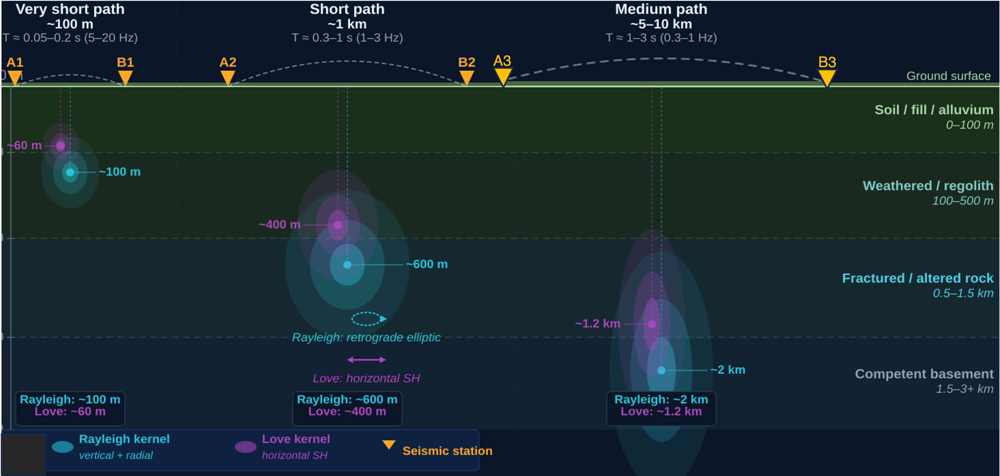
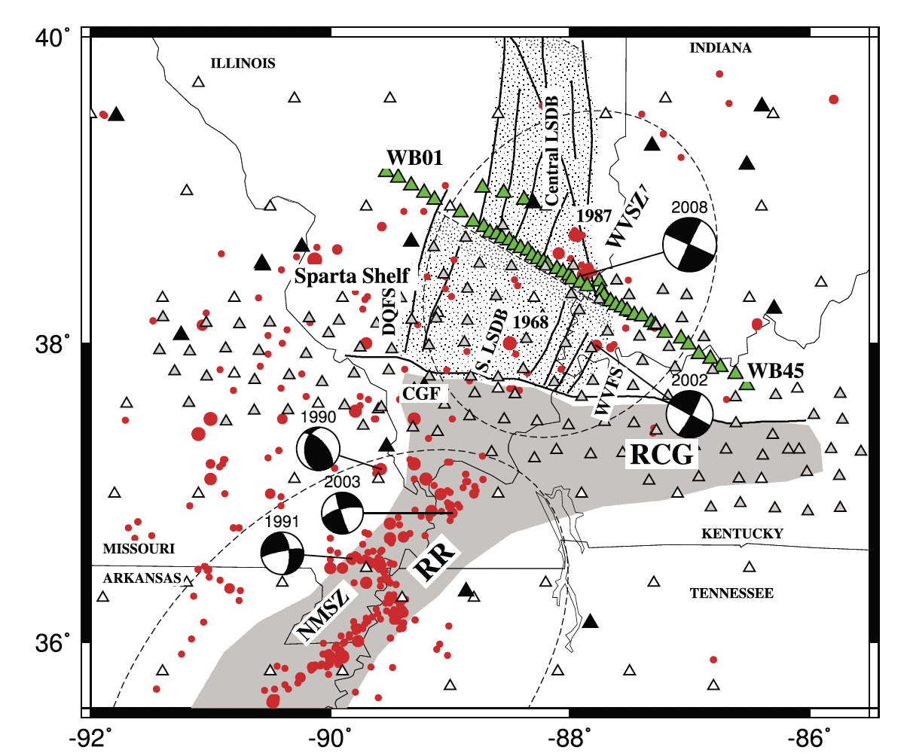
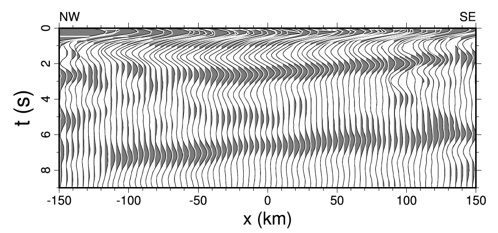
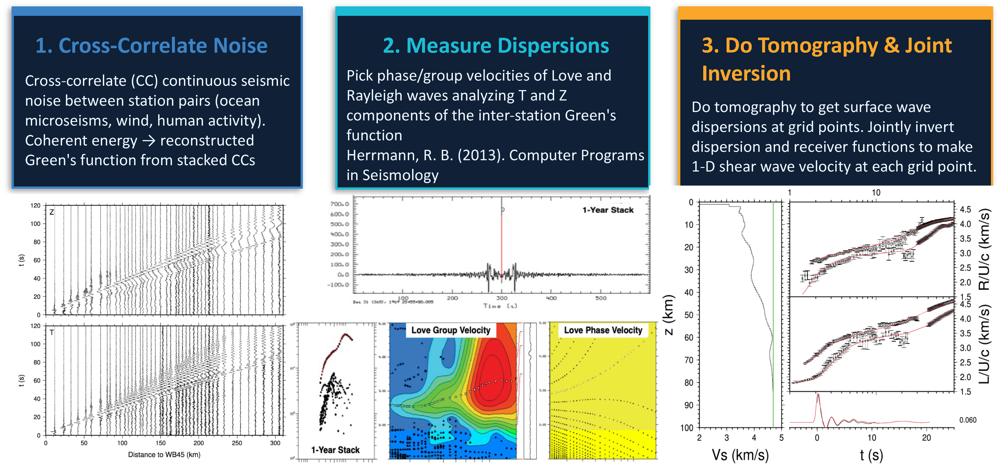
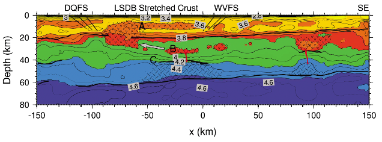
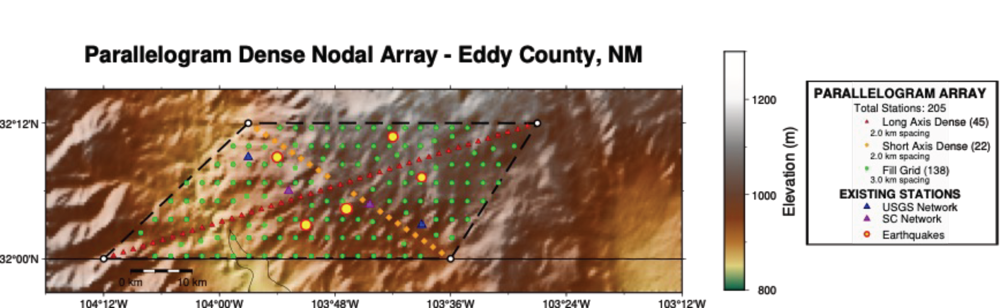

Imaging the Earth with its own noise
In earthquake seismology, noise is usually the interference to suppress so the seismic signal is easier to detect. But the Earth is never truly silent. Ocean waves crashing on coastlines, wind moving through forests, traffic on highways, all of it sends faint vibrations into the ground that travel as seismic waves across the planet. And critically, this background hum is not random. It is largely coherent: it travels predictably, follows known physical laws, and can be extracted and used.
By cross-correlating the noise recorded simultaneously at two stations over long time periods, we can reconstruct the Green's function between them, the seismic response of the Earth as if a tiny source were placed at one station and recorded at the other. Surface waves in these reconstructed Green's functions travel dispersively: their speed changes with frequency in a way that encodes the velocity structure of the crust along their path. If we measure enough of these frequency-dependent travel times across enough station pairs, and we can build a three-dimensional image of what the crust looks like beneath your feet, no earthquake required.

Rayleigh and Love waves are sensitive to shear velocity at different depth ranges, and that sensitivity shifts with station spacing. Dense arrays (stations a few km apart) resolve fine structure in the upper crust; sparser regional networks penetrate deeper into the lower crust and uppermost mantle. Combining both in a joint inversion breaks trade-offs that neither dataset alone can resolve.
That last step, the joint inversion, matters. Surface wave dispersion and teleseismic receiver functions have complementary sensitivities: dispersion constrains average velocities within layers, while receiver functions constrain the impedance contrasts at layer boundaries using converted P-to-S phases that sharply image interfaces. Neither gives a complete picture alone.
A failed rift hidden beneath the Midwest
The American Midwest feels geologically quiet, flat farmland, no active volcanoes, far from any plate boundary. Yet the region hosts intraplate seismic zones capable of producing damaging earthquakes. The most famous is the New Madrid Seismic Zone, source of the largest historical earthquakes in the contiguous United States (1811–1812). To the north lies the Wabash Valley Seismic Zone, less well known, but geologically fascinating. It has produced four earthquakes larger than magnitude 6.8 in the past 12,000 years, and its cause has been debated for decades.
The crust preserves the memory of a billion-year-old failed rift. By imaging the distributed deformation created during ancient continental extension, we can reconstruct how this fossil rift evolved and why it continues to influence present-day seismicity.
— The central theme of the Wabash Valley studyTo investigate, I analyzed a 300-km dense linear array of 44 broadband seismometers across the Wabash Valley, with station spacing as tight as 5 km in the central portion. This dense geometry unlocks short-period surface wave measurements that resolve upper-crustal structure at scales coarser arrays simply cannot see. I extracted thousands of interstation Green's functions, measured Rayleigh and Love wave dispersion across the full array and all available regional stations, and jointly inverted those measurements with receiver functions I calculated from recorded teleseismic events.

Red dots show seismicity in the zone, which coincides with the LaSalle Deformation Belt (dotted area), a proposed remnant of a failed Precambrian rift arm. Green triangles mark the dense linear array deployed for this study. The sparse seismicity makes this an ideal setting for ambient noise tomography: no large earthquakes to contaminate the noise cross-correlations, yet enough crustal complexity to make the imaging scientifically important (Aziz Zanjani et al. 2019).

Common-Conversion-Point stacked receiver functions along the 300-km Wabash Valley profile. Three major P-to-S converted phases are visible: a shallow phase from the base of low-velocity sediments, a mid-crustal phase interpreted as the Conrad discontinuity, and the Moho at 6–7 seconds. Note the upward bend in the Moho near the center of the profile, a structural signal that the joint inversion would later reveal as a rift pillow (Aziz Zanjani et al. 2019).


Joint inversion result for the Wabash Valley profile. Hatched regions above an uplifted Moho mark a high-velocity body interpreted as a rift pillow, magmatic material intruded from the mantle during a failed continental rift at the end of the Precambrian. Correlated velocity anomalies in the middle and upper crust (labeled A, B, C) indicate secondary igneous intrusions sourced from this deeper body. The asymmetry of the structure, the rift axis defined by the Moho uplift is offset ~30 km from the center of surface expression, is consistent with a simple-shear rift geometry (Aziz Zanjani et al. 2019).
The velocity model tells a billion-year-old story. Beneath the La Salle Deformation Belt, a 50-km-wide high-velocity body sits directly above an uplifted Moho segment, the unmistakable signature of a rift pillow: dense mafic material intruded from the mantle during a continental rifting episode that started and then stalled. The rift froze, the crust cooled, and this fossil structure has been sitting there ever since, subtly concentrating stress in the overlying brittle crust. Correlated velocity anomalies in the middle and upper crust are consistent with secondary magmatic intrusions that rose from this deeper body, bimodal felsic-mafic igneous material similar to structures documented in other ancient rift systems worldwide.
Present-day seismicity in the Wabash Valley is most likely the result of ancient faults within this rift system being reactivated by the modern regional stress field. The failed rift created a zone of structural weakness and density contrast that focuses stress in the upper crust, much like the better-studied New Madrid Seismic Zone to the southwest, but narrower and less developed, which explains why the Wabash Valley's seismicity is more diffuse and spatially scattered.
Imaging the shaking ground of southeast New Mexico
The lessons from the Wabash Valley now drive new work in a very different setting. Of all earthquakes magnitude 3.0 and above recorded in New Mexico since 2020, roughly 80% occurred in the southeast corner of the state, in and around the Permian Basin. Most are linked to oil and gas operations: wastewater from hydraulic fracturing injected back into shallow formations, altering pore pressures and pushing faults toward failure. The same mechanisms documented in the Texas side of the Delaware Basin are at work just across the state line.
Seismologists can detect these earthquakes. Locating them precisely, especially in depth, is the hard part. To use seismic wave travel times to determine earthquake locations, we need to know the velocity structure of the crust. We do not know that structure well enough in this region. Without a high-resolution 3D velocity model, earthquake depths remain uncertain, fault geometries stay blurred, and the ability to connect specific earthquakes to specific injection wells, the question that regulators and communities most need answered, is severely compromised.
Why depth matters for induced seismicity
In the Delaware Basin, saltwater disposal wells inject at different depths in different locations, and they overlap in time and space with hydraulic fracturing wells. Knowing which wells are driving seismicity, and through which geological formation, requires earthquake depths accurate to hundreds of meters, not kilometers. Without that, we risk reaching the wrong scientific conclusion and, consequently, the wrong regulatory response.
This is not a marginal technical concern. It is the difference between attributing an earthquake sequence to shallow injection (regulated, actionable) versus deep injection or production (different regulatory path). Velocity model quality directly determines what we can say about causality.

Approximately 200 portable sensors will be deployed across the region in Summer 2026, recording continuously for one month. Station spacing is designed to resolve shallow crustal structure at scales directly relevant to induced seismicity, finer than any existing seismic network in the region. Nodes are compact, self-contained, and require no power infrastructure, making dense deployments in remote areas practical.
To address this, I designed a dense nodal deployment for southeast New Mexico: approximately 200 small, portable seismometers recording the Earth's ambient noise continuously for about a month. This strategy has several advantages over waiting for earthquakes. Noise-based Green's functions can be extracted from any time period regardless of earthquake occurrence, they provide uniform path coverage across the entire array, and crucially these measurements can be combined with previous deployments to build up a dispersion-measurement repository. More paths mean more stable tomographic inversions and better-constrained depth resolution across a wider depth range.
From those recordings, we will extract surface wave dispersion and build a high-resolution 3D shear wave velocity model of the shallow crust beneath southeast New Mexico. That model then feeds directly into earthquake relocation: constraining depths to the precision needed to connect seismicity patterns to specific geological formations and fault systems. It is the same inference chain developed in the Wabash Valley, noise to Green's functions to dispersion to velocity model to relocated earthquakes, now applied to an actively seismic, economically critical region where getting it right has immediate real-world stakes.